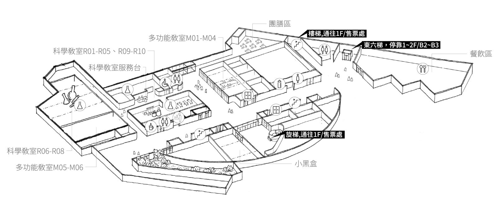
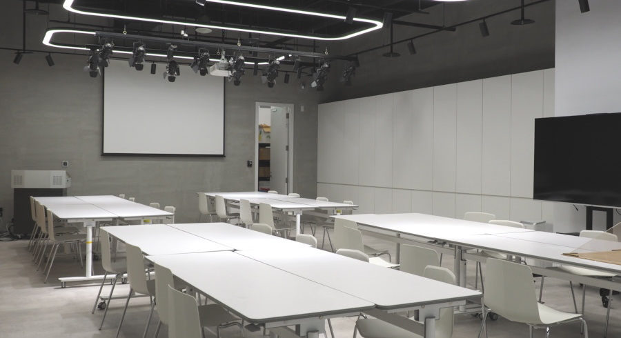

教育部特殊教育Taiwan Student Research Symposium
TSRS 2026
「台灣學生傑出研究發表論壇」（TSRS）是由教育部特殊教育資優類中央輔導團、國立臺灣科學教育館與教育部國教署資優教育資源中心共同主辦的年度盛事，提供台灣年度頂尖學生科展的傑出研究團隊一個發表研究成果、交流知識、向頂尖專家學習的高規格平台。
是全球規模最大、等級最高的高中生科學競賽，被譽為「青少年科學奧林匹亞」 。每年由美國科學促進協會主辦，吸引全球逾70國、超過1,500名學生爭奪百萬美元獎金與榮譽。
科教館每年從台灣國際科展(TISF)中遴選優秀團隊，代表台灣赴美參加 ISEF，是台灣學生科展的最高榮耀
2026年的 TSRS 延續往年精神，向2026 ISEF代表團邀請傑出學生研究團隊，以海報展示與口頭發表形式，在科教館展現台灣學生的研究能量與創意視野。
Forum Highlights
集研究發表、專家指導、跨域交流於一身，給學生最有深度的學術體驗
親睹台灣學生科展的最高榮耀，來自ISEF代表團的優秀研究團隊進行口頭報告，在專家評審面前展現研究深度與簡報表達能力。
以科學海報形式呈現研究成果，接受現場觀眾交流與提問，深化學術溝通能力。
各領域頂尖學者親臨現場，針對每組研究給予專業建議與深度學術指導。
透過網路直播，讓優秀學子被看見，給予學生肯定與激勵，也讓研究路上的學生見賢思齊。
匯聚自然科學、社會人文、工程技術等多元領域，促進跨科際知識的碰撞激盪。
在國立臺灣科學教育館舉辦，參與者可享有豐富的科學展示與互動設施資源。
Program
完整的全日論壇流程，兼顧研究發表與學術交流
2026 年 5 月 30 日（星期六）｜國立臺灣科學教育館
B1 電梯口｜領取資料、識別證
A 會場｜主辦單位致詞、大合照
A 會場｜邀請 ISEF 培訓總召或知名科學家，談科學研究趨勢
每場 3 隊，每隊發表＋講評約 25 分鐘
A 會場：數理應用 ／ B 會場：生化環科
團膳區｜自由交流
每場 2 隊，延續上午分組模式
A 會場：數理應用 ／ B 會場：生化環科
團膳區 ／ 廊道｜茶敘後與展演團隊交流，展示 A3 研究海報，教師與學生自由互動
A 會場｜主題：從選題到國際舞台──研究指導的關鍵
與談人：ISEF 指導教師代表、評審教授代表共 4–6 位
A 會場｜頒發感謝狀、閉幕
Expert Reviewers
邀請各學術領域頂尖專家擔任評審，給予學生最專業的研究指導
Presenting Teams
在台灣國際科展中脫穎而出，獲選ISEF代表團，
代表台灣學生研究能量的傑出作品
廣義焦點與完全四線形等共軛軌跡之探討
盧品均 臺北市立建國高級中學
指導教師：姚志鴻
A Study on Directed Graph Structures Induced by the Josephus Transformation
林嘉潁 臺北市立第一女子高級中學
指導教師：楊宗穎、鄭永明
椰纖絲奈米碳複合材料的溫度控制熱電相轉變及熱電應用
黃楚涵 臺北市立私立復興實驗高級中學
指導教師：馬瑪宣
A Multimodal AI System for Aphasia Patients Enabling Fluent Expression Featuring Simulated Data Generation
林炫宇、莊家瑋 國立花蓮高級中學
指導教師：趙義雄
Multimodal Spatial Awareness Assist Device for Patients with Single-Sided Deafness
陳邦豪 臺北市立建國高級中學
指導教師：劉怡君
合成活化免疫受體之雙機轉佐劑化合物
李孟嫙 臺北市立第一女子高級中學
指導教師：莊宇樸、許名智
探討黑腹果蠅基因 Scny 對其卵巢發育以及組蛋白調控之影響
施冠宇 國立臺灣師範大學附屬高級中學
指導教師：李敏嘉、林峻緯
脂滴自噬受體的鑑定與功能解析
林爾妍、皮羽晴 臺北市立第一女子高級中學
指導教師：李家瑋、陳怡安
探討閱讀時沉浸狀態與小說喜好的關聯及其神經機制
馬順恩 臺北市立第一女子高級中學
指導教師：郭文瑞、陳怡安
北極伊斯峽灣地區河口水體自然對流現象之實驗探討
盧羿涵、楊宜臻、葉于裴 臺北市立龍門國民中學
指導教師：陳英杰
Venue

